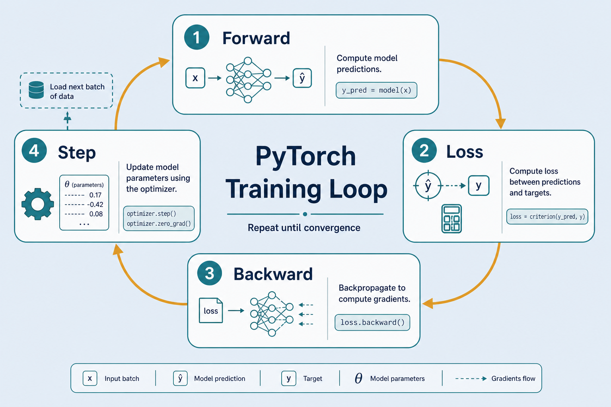
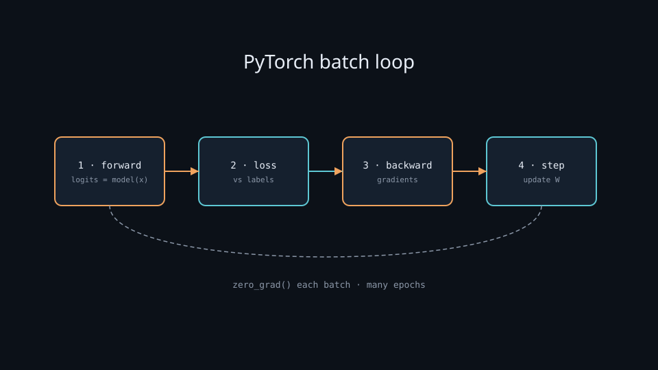

Train with PyTorch
You write the epoch loop: forward → loss → backward → step until the model is good enough. Each batch is one practice set; each epoch is one full pass through the textbook.
Why learn the loop by hand
Most popular flexible stack
Build and train yourself — see exactly how learning happens.
What HF wraps
Trainer, sentence-transformers, LoRA — all sit on this loop.
Debuggable
Exploding loss, bad LR, device mismatch — you know which step to inspect.
Key ideas
Epoch vs batch
Epoch = one pass over all data. Batch = chunk per step. Large = stabler; small = noisier, often generalizes better.
Four steps
zero_grad → forward → loss → backward + step.
Optimizer + LR
Adam ~1e-3 small nets; fine-tune Transformers often 2e-5–5e-5.
Also: val split for overfitting · .to(device) · save best checkpoint. Read: notes/pytorch-training.md
Training as a circular flowchart

Data keeps cycling through the model: predict, measure error, adjust weights, repeat until validation says “good enough.”
One batch, four moves

Forward computes logits. Loss compares to labels. Backward assigns blame. Step nudges weights. Always clear grads first.
The training loop
What “learning” feels like on one batch
Wrong → high loss
Tiny binary net misses the batch; cross-entropy spikes.
Backward blames weights
Gradients say how each parameter contributed to the error.
Step nudges slightly
Next forward is a bit less wrong. Batch 32, Adam 1e-3: loss ~0.69→0.25 is learning; train→0.05 while val↑0.30→0.55 is overfit.
Train / val / LR knobs
| Signal | Meaning | Action |
|---|---|---|
| Train ↓, val ↓ | Learning | Keep going; maybe raise capacity later |
| Train ↓, val ↑ | Overfitting | Stop early; regularize; more data |
| Loss NaN / jumps | LR too high | Lower LR; check labels / devices |
| Painfully flat | LR too low | Raise LR or train longer |
Train vs val loss: stop at the best checkpoint

Healthy: both curves fall together. Overfit: train keeps falling while val rises after epoch k — early-stop and keep the best val weights, not “more epochs.”
Deeper dive
Why zero_grad exists
PyTorch accumulates .grad so you can micro-batch (4×8 ≈ batch 32). Forget zero_grad → yesterday’s grads stack and loss explodes.
Loss wants raw logits
CrossEntropyLoss = log_softmax + NLL. Do not softmax before it. Softmax belongs at inference when you need probs.
Schedules & AMP
Transformers: warmup then cosine/linear decay. AMP + GradScaler ≈ 1.5–2× throughput — unscaled underflow → silent zero grads.
Decision guide
| Situation | Prefer | Avoid / why |
|---|---|---|
| Small MLP / softmax demo | Adam lr=1e-3, full batch loop | Tiny LR like 1e-6 — looks stuck for hours |
| Fine-tune BERT / MiniLM | AdamW 2e-5–5e-5, warmup, freeze/LoRA if tiny data | Adam 1e-3 on all layers — destroys pretrained features |
| Val ↑, train ↓ | Early stop + best ckpt; more regularization | More epochs on the same setup — deepens overfit |
| Custom loss / multi-task / RL | Explicit PyTorch loop | Fighting Keras fit with awkward callbacks |
| GPU OOM at batch 32 | Grad accumulation (4×8) or AMP | Blindly lowering LR — doesn’t free memory |
| Reproducible run | Seed + DataLoader generator + saved config | Only final weights with no hyperparams log |
Easy ways to break training
Forgot zero_grad()
Gradients stack across batches → wild updates.
Train mode at eval
Use model.eval() + torch.no_grad() when validating.
Device mismatch
Model on CUDA, batch on CPU → runtime error. Move both.
Leaky validation
Tuning on the test set — keep a true held-out test.
PyTorch vs Keras style
PyTorch
You write the loop — maximum control and visibility. Best for custom losses, GANs, RL.
Keras
compile + fit — fastest baseline + TensorBoard.
Same learning
Forward → loss → gradients → update. Only the API shape differs.
GPU: .to("cuda") or "mps" for model and each batch — see train-gpu.md. DataLoader: num_workers, pin_memory often beat micro-optimizing the net.
Dataset → checkpoint
torch.save(model.state_dict(), "ckpt.pt") — prefer the best val checkpoint for inference. Save optimizer state if you plan to resume.
Write the loop
once.
notes/pytorch-training.md — then try tensorflow-training for the declarative twin.
Open note →